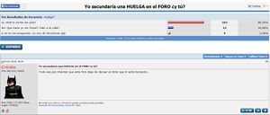

Forocoches
 De: La Frikipedia, la enciclopedia extremadamente seria.
De: La Frikipedia, la enciclopedia extremadamente seria.

|
Este artículo necesita ser ilustrado. Busca una afoto en nuestro depósito de imágenes o donde sea y ponla, pero que no sea pr0n, que se cabrea el señor del adSense y nos corta el grifo de los dólare. Y sin dólare no hay servidor...
|

|
ATENCIÓN
Este artículo debería separarse en varios artículos. Ya que o bien habla de varios temas a la vez o que contiene definiciones o es tan extenso que debería ser dividido. Así que entra y corta, fragmenta, despedaza, trincha, escinde, parte, divide, separa, aisla, fracciona, amputa, cercena y secciona el artículo en varios de ellos. Si no sabes como empezar mira la discusión del artículo. Y no olvides desambiguar después.
|
Forocoches, también llamado "Casa de putas" o foroflanders, es un submundo en el que los hombres pasan a ser perfectos y las mujeres pasan a ser putas. Fue creado allá por el 06 de Marzo de 2003 por Electrik, ser supremo y superior, motivo de admiración y alabanzas. Algunos dicen que es simplemente un foro del internet, pero hacen esas afirmaciones desde la ignorancia y la drogadicción. Obviamente, y como bien indica el nombre, no es un puto foro de coches.
El registro, actualmente, se consigue mediante invitación, para (en principio) evitar oleadas de trolls, algo incomprensible a la vez que utópico, ya que el troll es la raza más arraigada al submundo forocochil y no desaparece ni con medidas tan radicales. El sistema de invitaciones se impuso un día después de la mítica noche de los reportes largos del 26 de junio de 2009, en la que forocoches estuvo a punto de desaparecer. Gracias a esa noche y esos bans, ahora se registra con una invitación, lograda previo pago de un gritón de dólares.
A comienzos del 2013, el tirano Electrik fue más Hitlario que nunca, baneando a usuarios sin motivo, destruyendo la (cada vez menor) libertad de Forocoches y dándole todo el poder a los flanders. Esto provocó la ira de los forococheros, que se rebelaron yéndose a otros foros paralelos.
La creación
Electrik
El creador del foro. Electrik también es conocido vulgarmente por Ilitri entre la comunidad forocochera.
Sobre su nacimiento, dos teorías son aceptadas. La primera dice que se creó a sí mismo, cinco minutos después del Big Bang, para después arrancarse una costilla y de ella crear a su nación era insostenible, España vivía una gran crisis económica (mayor que la de ahora). El PP estaba perdiendo poder y coches.net se quedaba colgado cada dos por tres. Los fascistas habían registrado el primer forero, *****. 20 segundos después ya se había registrado el primer troll.
Gente que suele frecuentar forocoches
Aquí se distinguen varias partes:
Tíos: el 99% de forocoches está compuesto por tíos. Que suelen entrar en los hilos +18, suelen postear gilipolleces, modas, frases groseras... y son los mayormente baneados. Los hay de parcos en palabras y los hay que no tienen vida social (+100 mensajes/día).
Feminazis: el otro 1% restante es el del grupo de las feminazis. Entrando en hilitos de belleza, de fotos de tíos y yendo de niñas buenas. Las tías de forocoches son las más yankis del teclado. La mayoría están entre 60 y 130 mensajes por día, sin contar los privados que reciben y contestan. Según ellas, somos cansinos los tíos que posteamos groseridades, pero ellas publican un gritón de mensajes repetitivos, que llevan al baneo a algunas. Existe la frase: " LAS FORERAS NO EXISTEN, SON LOS PADRES "
Cosas que hay en Forocochia
Secciones
Tan sólo hay dos secciones: el General y el Todo, siendo la primera la más importante y en el único sitio en que hay alguien. Está plagado de temas polémicos, de temas 'serios' y 'semiserios', de trolleos varios y, sobre todo, de acción. Sobre el Todo se desconoce a ciencia cierta qué tipos de hilos contiene.
Hilos
Son, básicamente, sitios en los que hablar. De cualquier cosa, de lo que sea, lo importante es escribir todo lo que se pueda y más, con el único objetivo de sumar mensajes y llegar a los 100.000, que es cuando te dan una cubertería de plata. Lo que se dice en ellos es bastante intrascendente y nadie se los lee, por lo que no vale la pena currarse algo, pasará desapercibido. Están valorados mediante estrellas, aunque esta práctica últimamente está en desuso, salvo hilos sorprendentes.
Pueden ser de varios tipos:
- Hilo tonto: Un forero dice "Me ha salido un pelo en el culo". El resto de los foreros le insultarán, le aplaudirán, o le pedirán fotos y le amenazarán con reportarle. El hilo tendrá 14 millones de páginas, hasta que CSI Forocoches lo desenmascare y reciba un magistral owned con recopilación de todo tipo de datos privados y documentos audiovisuales. Es entonces cuando se creará una plataforma (a continuación) del estilo "Yo vi el owned a X". Los usuarios destapados por CSI FC volverán en 3-4 meses con otra cuenta, para evitar que se rían de él.
- Plataforma: Se arrejuntan un grupo de personas que piensan una cosa en común, van a buscar a los que piensan opuestamente a ellos, se insultan y se pegan. La gente que esta a favor se anota en una lista y pone cosas en su firma relacionadas al tema.
- +18: Guarradas y cosas gore. Lo que más mola y el motivo por el que todos los foreros se registran. Por contrato, deben crearse un mínimo de 3 a la hora, siendo especialmente agraciada compartir". Se incluye también en este subgénero vídeos como el "two girls one cup" o la "mamada a un delfín".
- Hilo repetido: La primera respuesta será "Pole" y la segunda "Invoco a Caballo Loco" o "Gol de Señor". A partir de ahí, todo el mundo dirá "Novedad".
Foreros
Así es como se denomina a los habitantes de Forocochia, pueden ser hombres o mujeres. En caso de que tengan pene (la cual cosa les obliga a estar dentro del grupo de los hombres) cumplen una serie de características:
- Un pene de 30 centimetros (o más).
- Un sueldo de 3.000€ al mes (o más).
- Un chalet adosado (o mejor).
- Una novia modelo.
- Tendrá siempre cuatro follohamijas (o más).
- Da igual el coche que se tenga. Si no cumple los requerimientos mínimos, el coche estará tuneado para alcanzarlos.
En el hipotético caso de que pertenezcas al género femenino, deberás poner fotos de tus tetas ante la amenaza de reporte. De todos modos, es algo totalmente improbable, pues es sabido que todos aquellos que dicen ser mujer, son en realidad simples trolls.
Dentro de estos dos géneros, existen varios tipos:
- Forero serio: Participará en hilos serios, dirá cosas serias y leerá cosas serias. Su frase más típica es "Antes el foro era mejor, esto es una mierda". Será reportado por soso.
- Forero pajillero: Se conecta para pedirle a las forococheras que le enseñe las tetas para hacerse su pajita. Será reportado por baboso.
- Forero graciosillo: Estará continuamente apretando F5 para ver los hilos nuevos creados. Entonces y antes de que lleguen a la segunda página, él entrará y hará un chiste. Le da igual si se habla de la muerte de alguien o de los colores que hay en un bote de Lacasitos, él dirá la coña y se irá, para que luego todos se rían leyendola. Será reportado por graciosillo.
- Forero troll: Siendo su vida real aburrida y solitária, decide inventarse una mejor y explicársela a todo para intentar ser alguien en la vida y no morir sin que nadie lo recuerde. Las frases que más acostumbran a leer son "Thanks for the info", citado del mismísimo Jebús o "MorenazoOo, no nos importa tu vida". Serán reportados por fantasmas.
- Forero forofo: Le da igual todo y cualquier cosa le importa una mierda. Se dedicará a insultar. Será reportado por tonto.
- Forero polémico: Su único objetivo es buscar follón; abrirá hilos en catalán, dira que Euskadi no es España o que los magrebís son asquerosos. Será reportado por polémico.
- Forero monotemático: Su vida gira en torno a un dogma de fe que se ha aprendido y solo habla de eso: Es típico verlos en las discusiones que hablan de política o de Fórmula 1. Será reportado por pesado.
- Forero mirón: Está registrado pero solo tiene un mensaje, lo suficiente para ver los hilos +18, no necesita más. No se le puede reportar porque no se lo conoce, pero si se pudiera, sería reportado por mirón.
- Forero nuevo: Acaba de llegar y siente la obligación de abrir un hilo diciendo "Hola, soy nuevo". Todos se reirán de él y se le quitarán las ganas de volver al día siguiente. Será reportado por si el hilo no es un +18 con su correspondiente imagen.
- Forera nueva: Se le exigirá fotos de sus tetas, en caso de no ver dicha prueba será reportada en 24 horas. Frase de rigor: "Tetas o reporte."
- Forero benemérito: Siempre, en todos los posts, hay un guardia civil dando su opinión sobre el tema.
- Forero Flanders: Se dedica a reportar cualquier cosa y el reporte es su mejor arma. Sera reportado por chivato. Sea del grupo que sea, se sentirá indefenso ante la multitud, por lo que buscará hamijos creando una "Chupipandi". Recordar también que el forero ni se crea ni se destruye, solamente se transforma. Últimamente y a partir del verano han cogido fuerza; tíos que se dedican a reportar a todo lo que aparece en la pantalla, indignados, ya sea por +18, por provocaciones o por lo que sea. Por el foro andan justicieros que se dedican a reportar flanders, pero consiguen poca cosa. Se dice que el 90% del foro pertenecen a este grupo y que sobrevivir en Forocoches merecería un capítulo especial de Bear Grylls en el último superviviente.
Chupipandi
Hilo en el que se juntarán un grupo de foreros para lamerse el falo y poner emoticonos. Además, si alguno de los integrantes se mete en una discusión, irán todos a defenderle irracionalmente. Si además, se meten con otro de estos grupos se llega a lo conocido como "Guerra de chupipandis": volarán reportes, insultos y descalificativos. Una de las dos está destinada a morir. Si la chupipandi lleva mucho tiempo en el foro, se creará un foro alternativo (véase RotoLandia[1] o LaCuevaReturns[2] )o que en realidad no necesitan para nada, pero así son mas guays.Son la escoria y la mugre del foro por excelencia, casi todo el mundo las odia pero nadie puede contra ellos pueden ubicarse tanto foreros forofos, como trolles o polémicos aunque más bien diría foreros patéticos. Se pueden desear incluso la muerte y no supone motivo de baneo puesto que otros foreros pasan como si nada de tal mensaje. Los movimientos antichupipandilleros han ido cayendo poco a poco y sin éxito ante la cantidad de foreros "guays" que se juntan en estas chupis vomitivas.
Discusiones
Una de las cosas más importantes. Insultos y descalificaciones, photoshops y owneds. Suele ser territorio de los foreros monotemáticos y, por mucho que te guste o estes a favor de una de las cosas que se dicen, no te atreverás a entrar debido a la situación bélica que hay dentro. Las más frecuentes son "PS3 vs. Xbox", "Mercedes vs. BMW", "Cataluña vs. España" o "Barça vs. Madrid". Están hiperpobladas por seres gilipollas e irracionales que defenderán lo suyo y atacarán lo demás, sin atender a razones.
Récords
Periódicamente (meses, años) surgen iniciativas para retar al foro a cerrar un hilo en el menor tiempo posible. El récord actual está en 4 minutos (17/01/2011) [3]. La marca a batir era de 7 minutos, establecida el 24/11/2009, y se pusieron el objetivo de 5 minutos. El récord de enero de 2011 está patrocinado por flekyy, que cerró el hilo con las palabras "Ya falta menos de la mitad". [4]
Reportes
O triangulitos. Arma de destrucción masiva. Será usada por cualquier paleto que se sienta ofendido por una tontería que tan sólo ofendería a un niño de 5 años o cuando vea que alguien piensa distinto a él. Con la acumulación de reportes, se llega al semiban, con el que todo el foro te va lento, te redirecciona y te pican los huevos. Por encima está el ban y por encima el Nirvana.
Al ser reportado muchas veces, consigues:
Semiban : el foro te va lentísimo, estás hasta los cojones. Si el semiban es más grande, no puedes enviar mensajes más que cada 5 minutos. Si el semiban está conseguido por un gritón de reportes, entonces aparecerá una ventanita: PLUGIN CHECK-REPORTES automático activo. La sanción durará entre 1 ó infinito días.
Ban : aquí te sale una ventanita de: PLUGIN CHECK REPORTES AUTOMÁTICO ACTIVO, seguido del distintivo: AutoBan/Spam/Flood/Troll, eso indica que l'as palmao; sólo puedes recuperar la cuenta si el gran Ilitri lo considera. Aún nadie lo ha conseguido. Hay foreros que van por la décima cuenta por lo menos
Kilometradas
Pese a la abundancia de sexo en la vida del forero base, estará dispuesto a recorrer más de 700 kilómetros por un polvo con una mujer que no ha visto en su vida, dejando claro lo salido que va. Obligatoriamente, se tiene que informar al foro de tal hecho abriendo un hilo donde se explique cómo ha ido todo.
Expresiones y costumbres típicas
- Pole, se usa en el primer comentario del hilo. Significa que has sido el primero en comentar el hilo.
- La única respuesta posible ante una duda o problema con algo femenino será Follatela!
- Si se repite un hilo o el tema expuesto es de hace un gritón de tiempo, se dirá Novedad, Inovoco a Caballo Loco, o GOL de Señor!!! con la intención de hundir al forero en cuestión y quitarle las ganas de escribir.
- Se hace un uso correcto de la palabra hamijo, en vez de la errónea, aunque frecuentemente aceptada pero nunca posteada amigo
- Prefijo Shur- sobre cualquier palabra. Las más utilizadas son shurperro y shurhand, además de shurmano.
- Si una mujer está buena o es bella (o ambas) se dirá esta expresión, típica forocochera: Melafo!, en caso contrario se le acusará de ser de Mordor.
- Si algo no te importa dirás Thanks 4 the info a la vez que levantas el pulgar de la mano derecha, le señalas con la mano izquierda en forma de pistola extendiendo el brazo mientras sonríes o Cuéntanos más. Si te pareces a Jesucristo ya es para hacerte un monumento.
- Otra frase que se está haciendo famosa es: Paga la coca- Primer aviso.
- Si alguien te amenaza, tan sólo debes decirle: Una cosa te digo, dos escopetas tengo. Huirá despavorido.[5]
- Si crees que te pueden reportar por lo que has puesto, puede ayudarte abrir el paraguas, por la posible lluvia de reportes, diciendo: Abro paraguas o LLuvia de reportes .
- Otra expresión muy utilizada es :roto2:.
- "Facilmente!!!" o "Me lo paso por la piedra" (Frase original de Matías el humilde enseñando sus bolidos)
- "Hacendado me hallo" o "Anonadado me hallo" (Cuando algo te impresiona mucho y es digno de tu atención).
- Ni de flaay! (expresión creada por la novia del creador del hilo mítico: fotos mias y de mi novia ayer en la nieve ^^)
- "Cada vez que salgo del Mercadona, dejo las bolsas con suavidad en el suelo, me doy la vuelta y me pongo a aplaudir hasta que me duelen las manos. "
- A mi no me preguntes solo soy una chica ijijij. Frase tipica de las feminazis
- ' T_D_S P_T_S' (De la famosa frase todas putas). Acrónimo seguramente creado por algún forero amargado y/o sin novia.
- Din del hilo o Din din din : frase creada por un usuario que entró preguntando por la camiseta de LLorente. Tal fue el furor que causó, que hoy día es una de las más utilizadas frases en forocoches. A veces, se le adjunta un vídeo de los simpsons y la palabra en cuestión.
- Mis Hogos!!! (Cuando publican hilos o mensajes con faltas de ortografía).
- Qué bien, eh? (Frase acompañada de imagen, normalmente con la cara de Richard Alpert) o con un gif de un perezoso
- Se va a habé un follón (Se va a montar bronca en forocoches).
- ¿Tengo cara de que me importe? (Frase acompañada de la foto de James Bond, para despreciar la anecdota o comentario de cualquier forero/a)
- "Por aquí ha pasado vettel" o simplemente "vettel" : frase para polear (y failear) que hizo famosa el usuario Tochitos el día que hizo 122 poles en 80 minutos.
- "Ya falta menos de la mitad !" En el récord de enero de 2010, el shurmano que cerró el post lo hizo con esta frase.
- GILIPOLLAS DE MIERDA EL KE LO LEA!!! Esta frase se suele escribe cuando se sospecha que el hilo es troll o para los novatos que no saben cancelar su cuenta.
- Tambien es muy utilizada la frase: Ola k Hase
Los 10 Mandamientos Forocochiles
1- Amarás las Poles sobre todas las cosas.
2- No tomarás el nombre la Vieja en vano.
3- No reportarás en vano(sisi3)
4- Santificarás el Gol de Señor del día.
5- Honrarás a Roto2.
6- No Trollearas sin gracia (aunque con esta son algo más permisivos).
7- No abrirás hilos +18, sin fotos y/o videos.
8- No codiciarás las cuentas ajenas.
9- Si eres chica, tendras que enseñar tus atributos tetas en tu primer post.
10- Comprarás en Mercadona siempre. Cada vez que salgas del Mercadona te darás la vuelta, dejarás las bolsas en el suelo y aplaudirás hasta que te sangren las manos.
Personajes célebres, citas e hilos míticos
Personajes célebres
Deben ser adorados y respetados. Si somos así es gracias a ellos.
- Electrick:Su definición esta arriba.
- La vieja: Ser superior al que adorarán todos los foreros. Es una bella dama madurita que se muestra ante la cámara como Dios la trajo al mundo.
- Roto2: Emoticono digno de admiración por su expresividad y grandilocuencia. Es color aguamarina y muestra como te quedas cuando algo te deja realmente sorprendido o anonadado. Muchos en Forocoches lo consideran un Dios.
- Clio en llamas: Un fantástico Clio V6 tiene problemas de sobrecalentamiento.
- Caballo Loco: Si repites un hilo, lo invocarán. Te dirá que eres un pringado y que vas tarde. Jode bastante, dicen.
- Panikero: Panchito asiduo a la discoteca Panic y que se llevaba a las pivitas de calle, sorprendiéndolas con su físico. Un latin lover, podría decirse. Es el primer hijo adoptivo de La vieja.
- John Andorra: El único forero andorrano conocido. Se dedicaba al tráfico de armas (legales) y consideraba deportivo un Ford Focus 1.8. Tras mucho tiempo sin saber nada de él, reapareció para preguntar como se podía pasar el juego "El Rey León" para Mega Drive.
- Seat Leon FR amarillo: "El coche". Nada es más rápido, nada es más furioso, nada es más cani, nada es mejor. Si lleva la pegata de la flor da 5cv más. Da igual si llevas un Porsche o un Ford T: si lo ves por la autopista no intentes seguirlo, no podrás.
- Pagafantas: Un metalero lo intentó todo para follarse a su amiga Emo, pero no lo consiguió. Incluso comprarle una fanta, valga la redundancia. Un primo. Actualmente el significado de este término varía, llegando a considerar pagafantas a los que simplemente no les gusta el T_D_S P_T_S.
- Masias El Humilde: Notas que le interceptaron el d.n.i con firma de "MASIA", más tarde le tiró los tejos a un forero intentando quedar con él.
- El cigala: Personaje que no ha sido famoso por cantar, sino por ser el gitano más visto de forocoches gracias a su gran frase que ha sido repetida una y otra vez: la cosa cambia, no?
- Bravas Hacendado: Alimento básico para cualquier forocochero, un forocochero de pro se alimentará unica y exclusivamente de este delicioso manjar, asi mismo, cuando un forero compre bravas en el Mercadona o en el Shurpermercado, deberá abrir un hilo con las fotos correspondientes.
- MercadonaMan: Considerado un superhéroe en la red de redes, este carismático troll es conocido por sus hilos enseñando cacho para deleite de las foreras, su equipamiento de superhéroe consiste en una bolsa del mercadona cubriéndole la cabeza y unas gafas de sol reshulonas. Entre sus proezas destaca el amputamiento de un pezón con un cuter con unas explicitas fotos del proceso.
- Mr. Bison: Se cree que puede ser Sinnerman debido a sus hilos sobre gimnasio a las 11 de la mañana. También es el hater oficial de Nintendo del foro, ya que casi todos sus hilos tratan sobre esto. Se le reconoce fácilmente por su avatar de Skeletor.
- Pistachomix: Troll ultrajano que se dedica a abrir hilos sin gracia y que siempre terminana hundiendose en el olvido. es el usuario más pringado de FOROCOCHES, conduce un Renault 21
- Shurperro: Deidad canina y mascota de forocoches, sus orígenes se remontan a cuando Ilitri le sacó una foto posando en un banco, pero no fue hasta que un intrépido forero le añadió las frases: "Ey! que te cuentas Shurperro!!" "Ná, aqui, troleando un poquillo", cuando se volvió un mito forocochil. A partir de la creación de shurperro, cualquier animal debe de llevar el prefijo Shur- (Ej. Shurloro, Shurgato, Shurelefante)
- Popellallo: Era un tipo que tenía el avatar de popellallo y "su este no soyo" como subnick, un día subió más fotos que no pertenecían a él, era un tipo de otro foro y los forococheros con las fotos aportadas empezaron a hacer chops, gif's... su cumbre llegó con el chop de él montado en el camión D MIGRANTE.
- Ñocla: Buey de mar. Lo poco conocido del palabro hizo que ganara popularidad muy rápidamente. Si a eso añadimos El Cigala, un forocochero no necesita más marisco
- Gol de Señor: Sinónimo de "¡NOVEDAD!" y de invocar a CABALLO LOCO. Existen multiples variantes, como Gol de Aristoteles, Gol del big bang, Gol de t-rex, etc...
- Pedobear: Oso claramente pederasta, meme procedente de 4chan. A diferencia de allí, en forocoches aparece mayormente en forma de sello (Pedobear seal of approval) cuando en algunas fotos de chicas la susodicha no aparenta alcanzar la mayoría de edad. Es de reseñar también la suprema empanada mental de muchos miembros de forocoches, que no parecen entender el significado de este ya antiguo meme, puesto que suelen utilizarlo como su propio avatar o firma, no entendiendo del todo lo que significa.
- Niña del escote: Su nombre real es Jaime Laycock. Pivón del 15 australiano, ideal de belleza forocochil. Un forocochero que vive en Australia consiguió que posara con un cartel que rezaba "Forocoches. T_D_S P_T_S". Existe incluso un blog dedicado con muchas fotos. En mayo de 2010 se presentó a un concurso de modelo. Todo marchaba bien hasta que por culpa de un grupo de trolls, que sin idea de ingles malinterpretaron sus correos, le hackearon su cuenta de hotmail, e hicieron que la descalificaran. Ahora no se habla con Forocoches desde entonces.
- Tito MC: El que te foca, el que te parte la boca, el que no se deja tocarse las pelotas, puta! ¿Sabias que...? Tiene novio, se llama Jarfaiter.
- FFFFFFFFFUUUUUUUU: Viñeta de la ira, auténticas obras de arte que sólo un niño de 4 años puede igualar. Consiste en un monigote que, en la última viñeta, siempre expresa su ira mediante la frase FFFFFUUUUU. Este meme también está importado directamente de 4chan.
- Angie Varona: De similares características a la Niña del escote. Abundan muchos tuentis con su foto haciéndose pasar por ella. Sus pechos aparentan haber recibido una buena mano de Photoshop.
- La chica de la cena: Jamylia Yleva es una chica que fue cazada durante una cena familiar luciendo un gran escote. Aparentemente tiene novio ya que sale con él en la mayoría de fotos.
- Paula Prendes: Lo más parecido a la Niña del Escote que hay en España, según los registros de CSI Forocoches. Junto a Patricia Conde protagoniza los picos de audiencia de La Secta. Se rumorea que debido al reciente conflicto entre Forocoches y la Niña del Escote, los fans forococheros de Paula pretenden dar un Golpe de Estado para coronarla como la nueva musa.
- Joan Capdevila: el futbolista campechano por excelencia,es mítico gracias a su espíritu fiestero muestra de su enorme talento humorístico: control del cubata con el hombro, cubo por encima de la cabeza,denegar un beso a Romina Belluschio diciendo que no es su tipo.Todo un ´´showman`` junto a Pepe Reina.
- Anna Simón: la nueva Diosa de FC, superó a la mítica Paula Prendes gracias a sus insinuantes vestidos que parecen de P_T_ (quería decir de personal sexy y sensual) en el programa más imbécil de la tv a parte de los de telecirco. Su escote,su melena rubia,sus ojos y su cuerpazo son motivos de FAP FAP FAP entre los follamodelos de FC.
- Gordo Granudo: El nuevo meme por excelencia de FC, se trata de un joven filandés más que presublimente con poca vida social, pero que ha hecho con un hueco en Internet con una foto suya que representa perfectamente a una persona de pocos éxitos en todos los ámbitos y destinando a jugar al WOW y usar de osadía para rechazar a chicas si tienen un lunar. En una entrevista concedida a un forocochero anunció que le gustaría tener atributos mecánicos en las extremidades a lo Will Smith en Yo Robot o como Terminator.
- Rafa_Granada: El prototipo de Forocochero por excelencia. Mas cojones que la mitad de los españoles juntos. Graba el video de una agresion, de 6 personas contra 1, que cuelga en Youtube, para intentar encontrar a los agresores. Llama a la policia, les enseña el video, y, al no denunciar la policia desde el Ministerio Fiscal, denuncia él. Sale en todos los canales de television.
- Lieri: El 17 de Marzo de 2011 decidió tomar el control del hilo "Terremoto de 9.0 en Japón". Desde entonces se cree que el forero ni ha comido, ni ha dormido, ni ha visto la luz del sol u oído la voz de una persona lejos del Skype. A día de hoy sigue envuelto con el hilo.
- R.Seagal: A estas alturas ya es conocido como 'el padre de la genética moderna'por sus hilos sobre como quedarte embarazado a ti mismo, como pasarte el sida a ti mismo o como clonar dinosaurios; o más aun como 'el amigo de The Rock' por sus innumerables hilos y comentarios aludiendo a su más que posible dios. Se cree que está intentando fundar una empresa de genética con su amigo The Rock para dominar el mundo y hacerse amo de forocoches
- Nazaretwp: Conocido como la más choni-puta de ForoCoches.
- Formidable_vlc: Conocia como una de las últimas Att Whore de Forocoches tras subir una foto en un hilo en el que la pagafantearon a niveles desorbitados, cuando antes le habían llamado gorda.
Hilos míticos
Aquellos hilos que todo buen forero debería conocer, siendo obligatorio leérselos y sabérselos de memoria. Si alguien no sabe cuales son, se le dirá "Bah, es que tu eres nuevo por aquí", y se lo reportará de inmediato. En un hilo se agrupan los momentos históricos de Forocoches:
- 2369, por Luis Moya: Un forero tuvo problemas con su teclado y un vaso de Cola Cao, pero no pudo dejar de forear. La leyenda cuenta que, a modo de Nostradamus, predice el año en que Forocoches será destruido.
- Solo para pibitas, ¿que tal estoy?, por Panikero: Panikero en todo su esplendor. Demostrando físico y estilo. Arrollando.
- Me an robado en el coche y melon destrozao, por Pepio: A un forero le roban el coche y el diccionario que llevaba dentro.
- yo no digo na juzgen usto sax no kiere pikas con viper, por Matiasviper: Matías, tiene muy buenos coches pero al pobre se lo folla todo el mundo. Estaba muy triste y abrió ese hilo.
- transformacion de BMW 325 coupe normalito a M3 de 321 c.v. (fotos), por Mafiaboy: Un forero nos cuenta como le puso a su 325 el motor de un M3. Obviamente, todo el mundo se lo creyó y lo felicitó.
- Lo de mi viejo no es normal...., por AMV8: Un joven nos explica como su padre lo sorprendió comprandose un 360 Challenge Stradale. CSI Forocoches, con BMW|X5 a la cabeza, lo desenmascaró. Total, que todo el mundo se rió de él.
- Vendo los puntos del carnet de mi abuela, por Mr.Jaws: Recién implantada la ley del carnet por puntos, un forero tiene una idea de negocio. Se lo creyó hasta Telecinco, dedicandole parte de sus serios telediarios.
- Unas pijicrias de 16-17 años nos han insultado en el mcdonals, por Jeenyus: El pobre Llenllus va al McDonald's con su hermano y tiene un fuerte enfrentamiento con unas adolescentes hormonadas.
- Crónica de cuando mi madre me pilló pajeandome (Borrado), por Samakiki: Este forero nos narra su experiencia con 14 años cuando su madre le sorprendió masturbandose en su cuarto, la reacción del forero fue gritar: "¡Que me he vuelto loco! ¡Que me he vuelto loco! y hacer contracciones como si estuviera poseido. La cronica se puede leer aqui: http://www.forocoches.com/foro/showthread.php?p=47367370#post47367370
- He metido la pata en la boda de mi hermana y mis padres no me hablan, por Junipero: La versión forocochera de El diario de Patricia, entrega por capítulos de un conflicto generacional entre Junipero y su tradicional padre, D.Pedro.
- Joderos...Me Voy a Yemen a Vivir!!, por Noult. Noult quiere darnos envidia por su traslado a ese país paradisiaco donde las Xbox salen tan baratas. Lo que vino después fue el culmen de los hilos paralelos...
- mi primera fiesta discotequera+13 (Borrado), anónimo (reivindicado por ANKASDERANA): Glorioso reportaje fotográfico multipeich sobre las primeras andadas discotequeras de un nutrido grupo de catorceañeros de la chavalada pamplonesa. Destacó el éxito de la chica de blanco. Por desgracia, el post murió en extrañas circunstancias y hoy en día no existe manera de llegar a él.
- He salido en la tele!!! [Tema Serio] por John Negrator: Después de la celebración por la victoria del barça nuestro amigo John Negrator se dio cuenta de que había salido en la tele y corrió a contarlo en forocoches. El resultado no fué el que esperaba.
- Le he hablado a mi abuela sobre Panikero [opinión de ella adentro] (Borrado) por Kaos19K: En un intento de ser el nuevo ídolo de masas de FC, el usuario Kaos19K se encuentra con la reacción de marccus, que hace una aparición estelar en el hilo con una estremecedora frase.
- ¿¿PERO QUÉ MIERDA ES ESTO??: Museo de CERA Madrid, por Xtorm: Hilo que ha levantado carcajadas en medio foro. Forero que se da cuenta que el Museo de Cera de Madrid, lejos de parecer lo que su nombre indica, con figuras fieles a sus personajes, parece el museo de los horrores, que de no ser por los carteles indicando el personaje que corresponde a cada figura, no se reconocerían. Se ha hecho mítica sobre todo la figura de Fernando Alonso. El 26/03/2010 el hilo apareció en el programa de televisión "Sé lo que hicísteis".
- MEGAtrolleada!![INSIDE] bajemosle los humos A ESTA TIA[TUENTI] +prv (Borrado) por dead_dead: A raíz de un hilo en el que una putote se promocionaba en el tuenti, CSI Forocoches se puso manos a la obra para bajarla los humos... Una gran sorpresa será revelada
- TENGO LA POLLA AZUL!!! HALLUDA HAMIJOS!!! (Borrado)luego seguido de Gilipollas el que lo lea eskrito por uno que queria que le baneen o algo asi. Este hilo es obligatorio abrirlo si eres nuevo en el foro.
- Hagamos algo grande ((Inaguración del Shurpermercado INSIDE)), por _Thor__: Crónica del nacimiento de la franquicia que acabará con el poder de Mercadona.
- La peor cita de la historia... (Borrado) por Pitisaurio: gran hilo acompañado unas viñetas mas que explicativas de como cuando crees que una cita va mal aun puede ir mucho peor
- fotos mias y de mi novia ayer en la nieve ^^ (Borrado), por Juan22: Un cani pone fotos suyas con la parienta en la "nieve", en realidad hay un dedo de nieve a lo sumo, tapa la cara de su novia y no la matricula de su astra reshulon, tampoco sabe de la existencia de ese malvado invento llamado exif. CSI FC se pone en marcha, con Vican como jefe de brigada, Vican saca de todo de ellos sin revelar demasiado, mientras salen datos de un pollo que es el anterior dueño del bolido reshulon.La novia entra a trapo y sin comerlo ni beberlo crea el nuevo meme forocochil NI DE FLAAY (las 2 a's son importantes!)El hilo degenera cuando ciertos foreros sacan hilos donde el cani cuenta que en determinada ocasion le metio el pene a una prima con ubres considerables.Los protagonistas(Cani y novia) desaperecen del hilo, en una mas que probable discusion conyugal.Vuelve a aparecer con mas cabreo (cualquier forocochero medio pensará que es debido a que la novia se mosqueó con el hilo sobre la prima que se folló y la mala ostia y retención seminal le tiene colapsado y tiene que descargar volviendo a la carga). Amenaza con denunciar, se mete con forococheros y sus muertos y el forero Vican estalla poniendo cuenta de facebook, hilos de otros foros, cuenta de hotmail, públicos todos ellos.
- ¿Qué famoso habéis visto en persona que hayáis dicho:"vaya tío/a cojonudo/a?, por wys: Hilo sobre la campechanía de David Summers.
- Foreras: ¿Cuando os hechan el grumo dentro y os quedais dormidas...? Que sensación teneis por la mañana? Es como si os hubiera cicatrizado el coño? Olerá a mil demonios no? (Tristemente Borrado), por Acusatio: Pregunta existencial, curiosa cuanto menos de un forero peculiar donde los haya... las respuestas del hilo son míticas, una perla tras otra
- Ayer fuí a la playa con mi prima y sus amigas (4 Volumenes), por PozuII: Historia sobre un forero que estando de resaca va con su prima y las amigas de su prima a la playa,entre las amigas se encuentran 2 bastante buenas y una mordoriana.
- Mi colega del ketchup la ha vuelto a liar (12 pruebas) (3 Volumenes), por Chico Sun: Cuenta como un loco llena el buzón de la tía que le mola con un montón de paquetes de ketchup y una nota que dice "Ketchupi sería estar juntos ¿no?". Al ver que esto no tenía éxito, decidió hacer doce pruebas para conquistar a la chica, después de ver una peli de Asterix y Obelix. La historia es también conocida como la de "El Psicópata del Ketchup".
- Quien ha puesto el +prv al hilo de pelo pantene? , por Doctor_House: Se trata de uno de los mayores fails por parte de un forocochero novato, en concreto, participaba en un trolleo a pelo pantene para enviar a una foca al primer puesto para que saliese en un anuncio, pero Electrick puso la marca de "+prv" al hilo (el +prv sirve para que los nuevos registrados no puedan entrar a los hilos hasta que su cuenta no haya cumplido 3 meses de antigüedad y tener +200 mensajes) el forero como es de imaginar pilló un cabreo del 15 al no poder entrar en el hilo del trolleo a pelo pantene (ya que su cuenta no llegaba ni al mes) entonces tuvo la feliz idea de hacer un hilo pidiendo explicaciones del por qué el "+prv" el en hilo, sin darse cuenta que esa marca la incluyo en su propio hilo y no pudo entrar en él. Como es de imaginar el post se llenó de páginas y páginas de "fails" "owned" y lo pusieron verde por patán sin que él pudiera leerlos, el cachondeo llegó incluso a otros hilos cuando este usuario pregunta alguna duda en otro hilo, los foreros en plan broma le señalan que la respuesta a su duda está en el post +prv que el mismo escribió. Ahora a este forero se le reconoce como un claro ejemplo de metedura de pata
- He visto a un usuario con una foto mía chopeada de avatar (Borrado), por Cannibal78: El usuario LordLex, conocido por el largo palo introducido en su cavidad anal, causó furor al usar como avatar la foto de alguien hasta el momento llamado "Cabezabuque", un tío con un cabezón como un campo de aviación. El susodicho acabó apareciendo alegando una larga ausencia y que al regresar se había encontrado con el percal. LordLex se acabó quitando el avatar, pero las fotos y los chops siguieron volando y causando risas en masa.
- ¿Puedes tener hijos embarazándote a ti mismo?, por R.Seagal: Nada más entrar a forocoches fue reportado por preguntar si se podía pasar el sida a sí mismo, pero no contento con su curiosidad, Electrik le resucitó y abrió este hilo para ver si podías fecundarte a ti misma cogiendo espermatozoides tuyos antes de cambiarte de sexo.
- Esto es de migrante, por Alcantarisa: Un forero postea la foto de un camión con gorra y gafas de sol, que asegura fue el regalo de Navidad de su novia, a la que previamente él le había dicho que le comprara "cualquier cosa". Los foreros se rieron del camión, de la chica, del Alcantarisa, y de la tele que salía detrás. Tiempo después, Alcantarisa dijo que era una broma. Se trataba de un forero de Alcantarilla, Murcia, con ganas de juerga. Pero a nadie le importó. A partir de entonces se convirtió en una expresión válidad para expresar el desencanto e indignación. Los novatos son muy dados a preguntar que por qué se escribe "de migrante" en vez de "denigrante", y son respondidos con quotes eternos.
- Don Kebap. Un tío va a un establecimiento de kebap y tiene una trifulca con el dueño. Se crean cienes y cienes de hilos paralelos, y a la mañana siguiente los Flaunders lo borran todo.
- he apostado 1000 euros a que AMY WINEHOUSE muere con 27 años En el año 2009, un forero llamado Ynestrillas abre un hilo diciendo que ha apostado 1000 euros a que Amy moriría a los 27 años. Efectivamente, en Julio de 2011 Amy muere y tras el reflote del hilo, todo el foro queda perplejo ante la predicción del forero.
- descoñe en la promocion de un instituto el forero Nachetek cuelga un video (Video no existente) sobre un instituto que quiere promocionarse mediante una "canción". Mendoza mendoza, oza oza...
Citas
«Hola, soy nuevo y no me ubico muxo en esto de los fors, queria saber si alguien sabe como construir una dobladora d etubos(pipe bender), vi que un integrante del foro tenia una antigua, me gustatia saber si puede compartir mensiones(un planito), lo d ela bomba se cambia por una gata hidraulica y listo.
Gracias de antemano y muy buen foro»
~ Panchito perdido
«Os voy hoy a contar una noticia, es de verguenza su actitud,llego yo en el coche y un de estos triadas se me pone a hacer pamplinas y en esto que yo llego para decirle que no y cundo se cabrea el otro yo pienso que es un gilipollas de aqui te espero pero no se lo digo, le pongo mala cara y llega un opel corsa y casi se estampa contar él.en el otro lado pasa una señora con la compra y dice que no.El tio se cabrea aun más pero yo le mando a la mierda y me voy por desgracia esto cada vez es mas habitual en las carreteras.saludos
»
~ Brasas En coches.net
«Estoy totalmente de acuerdo contigo, la idea intrinseca expuesta es brillante, las posibles opciones en el desarrollo del tema son infinitas, la claridad del argumento es mayúscula, pocas veces he tenido ocasión de leer un tema tan ameno, con la longitud justa, con la métrica adecuada, sin florituras. Ya lo dijo Quevedo: Lo bueno si breve dos veces bueno..»
~ Quevedo
«A mi mi abuela una vez por la mañana me dijo que si habia alguna en mi clase que se llamase "encanto" le pregunté xq y me dijo que esa noche solo decia "encanto ven aqui... encanto sientate
conmigo" jajaja joer que verguenza pasé...»
~ ClOcKwOrKoRaNgE
«Hola foreros, como muchos de vosotros, tengo una tortuga de agua (acabo de venir de comprarla ), y aunque parece sencillo su cuidado, estaría bien darnos consejos sobre el tema.
La comida, ¿se la dáis en el agua o en la isla?
Parece asustada la pobre
»
~ European
«la pagina esa a mi me parece un fake.. pero no un fake cualkier.. si no un FAKE CON MAYUSCULAS, para empezar los encuadres y el metodo de cuadricula y columnas no es el mismo k el de 20 minutos ( pagina oficial ) luea el link al k no redirecciona.por dios.. por si alguien no lo sabe.. estamos ante un nuevo bulo, asi como los k hubo ya anteriormente con los ovnis y demas xD
»
~ wolfox
«No creo que un animal pueda estar enganchado a la nicotina, puesto que la nicotina afecta al cerebro y salvo los seres humanos, ningún ser vivo tiene cerebro. Esa biología de 1º de ESO machote»
~ Ixione
«Te contaré un secreto, algo que no se enseña en tu universidad, los flanders nos envidian. Nos envidian porque somos baneables, porque cada instante nuestro podría ser el último, todo es más troll porque hay un final. Nunca serás mas troll de lo que eres ahora, nunca volveremos a postear aquí.»
~ I.Kant III
Muertes y Trabajos
«En Marzo de 2008 un forero de forocoches llamado Rufus_ casi atropella a una niña Gitana, abandonó su identidad y sobrevive como soldado de fortuna, si tiene un problema con Gitanos y necesita ayuda quiza pueda contratarlo.»
~ Rufus_ y Chuck Norris
«El Cadillac Fantastico es una trepidante aventura de un gordo que no existe en un mundo lleno de gasolineras.Tio Warro; un joven solitario embarcado en una cruzada para salvar la causa de los fumadores, los estancos, los puros, dentro de un mundo de canis que operan al margen de la buena educacion»
~ {{{2}}}
Foreros famosos
- Matías el humilde Famoso por su vocabulario y sus coches.
- Panikero, no necesita presentación
- tw-rais, con su famoso saludos.marc. Actualmente baneado. Un poco cansino.
- Rompetechos, con muchos bans a sus espaldas, crack.
- Cuffero: multibaneado y exiliado en rotolandia
- Flopis arquitecto del foro, troll exitoso y contemporáneo de Jeenyus, ahora se hace llamar yoclio
- Furtivo (Forero Argentino, famoso por su "Saludos, Furtivo), con más gracia que tw-rais
- Iker (Iker1, Iker2, Iker3 etc... así hasta llegar a Iker7, numero de veces que ha sido reportado), crack de los baneos
- Noult (Noult#1, Noult#2, etc, no se sabe cuántas veces lo han baneado, se cree que es el forero mas reportado de la historia de los foros por su pedante y arrogante actitud) Ahora pasa el tiempo en rotolandia buitreando a Jane Doe. Ha sido la primera persona en superar el infinito en reportes.
- Shockadelica, Housequake o Jamie Starr ( desde el I hasta las 13, sigue de cerca a Noult en número de cuentas baneadas; caracterizado por una increible pesadez con temas relacionados con Rusia y por su amor por la
fea pelirroja de las Tatu)Se ha dejado caer por rotolandia, pero tampoco le aguantan. Ahora llamado Usuario1989, ya no es tan troll pero igual de Attention Whore.
- The GodFather: Ha tratado de llevar a rotolandia el exitoso post de FC sin éxito.
- Nostro, old members don't die, es lo que suele poner en el título personal de sus otras cuentas. Baneado por abrir un hilo donde comentaba que había decidido suicidarse. Tras días desaparecido y con la gente preocupada, reapareció para hacer la gracia. Multibaneado también en rl ahora reside en troyeame. Troll sin gracia, hoyga
- Ggonn
- Lorsaz.
- OMG
- Ross
Gayer Geller
- Popellallo (soy demigrante)
- Pacodedosrapidos, por que nadie hizo tanto daño en tan poco tiempo a forocoches.
- TEAR y su culito terso, por no hablar de su monoaleta,conocido sionista del foro.
- Pamina y Duco, la pareja pastelosa. Se dice que ellos y su chupipandi pueden acabar con cualquiera que les caiga mal, y muchos les temen por ello. Gracias a ellos existe la expresión 'más cansino que Duco y Pamina'. Asquerosos y empalagosos. Además se niegan a crear un foro propio y evitar así que los demás foreros tengan que leer sus pasteladas repugnantes.
- argeem (con su famoso (creo) :roto2supersayan:)
- Tutuman, nick usado por Pepiño Blanco para entrar al foro. Fue baneado por provocarle un cáncer a Rajoy. Baneado también en rotolandia y en coches.net, donde se le reconoce por ponerse nicks con nombre de pueblo riojano.
- Desiagirl, chica modesta y culta donde las haya, con un gran amor por los pobres y las personas de raza negra - Ojo TROLL, creador caido en combate-, repito: TROLLACO
- Tony mannoni dicen que se registró en foromotos y no se volvio a saber nada de él.
- Andaluza25, el sueño sexual de todo forocochero, melafo. Andaluza25 se registró hace años y se rumorea que ya anda cerca de la treintena.
- danxu, especialista en batidos de asteroides y alcohólico oficial del forro
- Alexsainz con su alfa calamar y sus poles mañaneras, en otras palabras, un
puto troll.
- Dakar-e30, alias el etreintero
- toivonen1978, miembro activo de la plataforma "No me siento español" y famoso por los owneds dela Eurocopa. Ahora habita en rotolandia, junto a otros célebres trollacos.
- Fuckindan, el mayor troll de ingenieria telequil (diccionario corrector con tripode).
- Eleztro conocido por sus tablas de ejercicios y su brazo del que se comenta que es infinito.(Su famosa web ha sido juankeada varias veces con imagenes de Canis)
- Xtremo o también llamado "el de los viajes"
- Joe34, bautizador del Shurpermercado.
- SergioPegaso, es el forero homosexual por excelencia. Es conocido por meterse botes de proteina por el culo y por abrir post de caracter homosexual, su gran admiración hacia Leonardo Dicaprio es muy preocupante. Abrió un hilo midiéndose la polla.
- Mandedey, hermano foril del anterior. Según él, no es gay, pero le encanta ir a discos gays, le llaman la atención los tíos macizorros y la bisexualidad. Fan acérrimo de Matt Damon.
- dmptuning: forero más bien normalito aunque muy activo pese a su juventud. Dio su cuenta por defender a capa y espada a la Niña del Escote frente a los trolls la noche del concurso (fue de los pocos que sabía inglés y ententió correctamente los mails). Su final llegó cuando a modo de venganza creó el hilo "Si os cargáis a la niña del escote, yo me cargo a roto2", en el que exigía cambiar el icono forocochero por sisi1. No tardaron los trolls en enviar sus reportes cuando se metieron con su Dios. Se rumorea que aún sigue el foro desde fuera esperando regresar, con más fuerza que nunca.
- El Chiko, forero madridista, famoso por sus incontables OWNEDS, tambien conocido como Chikowned. Mantiene una fuerte rivalidad con PiOnEeR, su rival de recibir finos OWNEDS.El 14/11/2010 fué baneado del foro al abrir un hilo incitando al reporte hacia el forero PionEeR.
- Pistachomix, el forero cutre que siempre fracasa en sus hilos, baneado por POLEMAN.
- PiOnEeR, forero barcelonista, famoso por uno de los OWNEDS mas miticos de FC, tambien es conocido como Piowned. El OWNED vino a raiz de que creó un hilo llamado "Gooooooooool Del Osasuna" y con un mensaje, altamente nocivo "A joderse merengones, hoy no hay fiesta", acto seguido remonta el Real Madrid, ganando la Liga y asi creando uno de los OWNEDS miticos de FC. Mantiene una fuerte rivalidad con El Chiko.
- Pachinco: murió cagandose en la puta madre de los flanders en la segunda oleada de reportes creada a traves de las nuevas normas de ilitri, se rumorea que esta en la sierra preparando un nuevo ataque con otros antiflanders.
- Morringan: Forero muerto en la segunda noche de reportes, su muerte le llego con el post elektric eres un hipócrita. Su grandiosa actuación le ha hecho llegar al olimpo de los grandes forococheros.
- Malbo: Forera que cayo frente a la ordas flanderiles despues de una gran resistencia otorgada por sus dos pechos, se inmolo con gran valor, haciendole ganar el respeto de sus compañeros antiflanders
- BigWallace y Vato: Su broma comenzó la media noche del Sábado 24 de Abril de 2011, cuando comenzaron a polear todos los hilos que veían. Ésto no queda aquí, cada uno tenía una especialidad, BigWallace poleaba con piropos y colores, por ejemplo, hizo la pole en un hilo de el famoso _jaro_ , con éste texto "POLE GUAPO KE BUENO ESTAS!!!1!!ne!!1eln", recordemos que _jaro_ es un homosexual reconocido. Por otro lado, Vato, poleaba hilos con más de 3 años y también con la misma temática. Pero la ecatombe llegó, cuando un forero le pidió a Vato que le polease piropeandole, pero éste faileó, y quien se llevó la pole, fue BigWallace, con "pole te como la polla", en ese mismo hilo, todos citaron la pole fail de Vato, lo que le hizo aún más famoso. Vato cayó la misma noche a las 3:17, Coolface, quien abrió el hilo plataforma para ambos foreros, y ambos polearon y subpolearon, cayó minutos después. Dice la leyenda que BigWallace sigue vivo, aunque no por mucho tiempo.
- Sinnerman: El hombre de los ciclos sanos. Es conocido por ser uno de los mayores troles en la historia forocochil. Esto es debido a sus numerosos hilos sobre musculación y relacionados, y a su infinito nº de cuentas trolles: MercadonaMan, pechuguetto, Sr. Sinnerman...
- FreeStyler: Forero mítico cuyos hilos creados y aportaciones en general rozan la perfección. Se dice que es la reencarnación de Dios en la tierra, o en forocoches más bien. Melofo.
- Amorten: Un auténtico poleman. Ya ha sido reportado, aunque resurgió de sus propias cenizas cuál Ave Fénix.
- Kante18: Fundador de la Peña NBA de forocoches, pero es mas conocido por la noche de las poles largas. Polemen donde los haya, un dia decidio hacer 20 poles en una noche y lo público, el foro se volvio loco y en todos los hilos se podian leer un "jodete kante" o esta pole se la dedico a kante, también surgiero muchos memes sobre susodicho. El tal kante no podia hacer ninguna pole y se vio tan desesperado que empezó a reflotar hilos antiguos sin poles, cayo reportado. Se sabe que ha vuelto y que ya solo anda por la peña. También corre el rumor de que era empleado de Ilitri, pero esto ya no lo sabemos con certeza.
- Boston: Otro forero que murió por su propio honor y el de sus poles. Se hizo famoso por sus poles compuestas de una imgen de Vettel y un texto. Surgieron muchos imitadores con Alonso, Hamilton o Button; pero él era el original. Fue el autor del owned al forero Tendon, que decía estar harto de sus poles. Boston, seguidamente, le hizo una pole.
- Fiddie: Tambien conocido por Fiddeu, Fideo o ElHombreDeLasMilHorasEnLaOficina, es un personaje playtaformil, adorado por el resto de pelapollas que forman la chupipandi de la ps3 en forocoches. Es adicto a cualquier cosa que tenga la marca Porsche, y el online de algunos juegos le va como el culo porque tiene conexion 3g por una disputa contra Telefonica.Es facil identificarlo, lleva de avatar un RSR la mar de chulo. Ademas, el sujeto es el principal editor del canal de noticias playtaformil FiddieNews.
- Arbez: El forero más idiota de forocoches y a la vez el más prepotente con permiso de Ilustrado, se dedica a hablar de su genial vida y fantasmear con su facilidad para atraer mujeres además de buscar la fama en el foro y la trifulca a la mínima. ATTENTION WHORE EN POTENCIAL y posee el reconocimiento de 'Forero más odiado'. Además es el forero con más cuentas de todo ForoCoches (se le conocen más de 50 cunetas baneadas) y fue el autor de una de las noches más míticas de FC: "La Noche de los Contratos Largos".
- Shurwanlee: It´s a Trap. Forero que se hace pasar por mujer pero sus intentos en vano hacen que disminuya su veracidad.
- Valkyria: (Anteriormente conocida como Valkyria17 hasta que Ilitri le borro el número) Supuesta forera de marcado carácter Attetion Whore. Conocida mangante de yogures en el opencor, pagafanteada hasta la saciedad y posiblemente la forera con mas hilos creados "en su honor" con delicados y románticos títulos como "Valkyria te voy a reventar tol ojete a pollazos" o "Valkyria te voy a comer tol coño tututu".
- Shakeit: Forero pesado por excelencia, media de 50 hilos diarios con temáticas de lo más variopinta...desde la entomofilia sexual hasta estudios sobre lejías, pasando por Tom y Jerry. Inspirador del movimiento Avalancha Shakeit.
- Wololo: quería salir en esta lista para cumplir su objetivo en la vida. Ya lo conseguistes campeón.
- Gorushi: gordaco y orgulloso de ello. Se postula en contra de los hilos del gimnasio y de hacer ejercicio. Tiene trifulcas con Arbez.
- facilmente_gano:Poleman que ha batido récord de poles de toda la historia de fc.
- Falco: Autor de los hilos oficiales del partido semanal del Madrí y su alto contenido forofil, conocido merengue no-fanatico
- Alex10: Trollazo preadolescente cuyas predicciones acerca de las victorias del Madrid siempre le acababan dejando en ridiculo. Fue baneado hasta tres veces.
- VatoG: Baneado múltiples veces, era el estandarte del trollerio merengue, azote de la culerada.
- Jose Mourinho: Mitico por su media de mensajes/dia, que mantuvo bastante tiempo muy por encima de la del mítico Cyborg. Hilo que había, hilo que comentaba, sobretodo de fútbol. Acabó baneado como otros que no se despegaban del teclado ni para mear (Buk, AltosDecibelios...)
Nuevo movimiento surgido en el foro, que odia a Electrik y al sistema automático de reportes. A partir del año 2008, estos usuarios, también conocidos como foreros exiliados, huyen de ForoCoches refugiandose en otros foros paralelos como RotoLandia.com, o trolleame.com
Este movimiento crece considerablemente, cuando Electrik añade nuevas normas al foro, cambia el sistema de reportes y añade más mano dura en ForoCoches gracias al nuevo sistema de Flood. También corre el rumor de la venta del foro a Torbe, lo que hizo que un 37% de los foreros emigraran a los foros paralelos bajo el lema "Libertad para Roto2" y "Hagamos rico a otro"
Existe también un foro de resentidos y reprimidos sexuales llamado LaCuevaReturns en los que los que han sido baneados de FC de forma humillante, van a ese apestoso foro a planear su venganza contra un mundo que los desprecia con su versión de un roto2 rojo con iconos de reporte por ojos.
Inverforo
Otro foro del Ilitri, arquitecto de la saga Forocochia. Cuando ForoCoches es atacado por otros foros archirivales como Mierda Vida, Puta Gordura o Mierdistation (del ingles "Estación de la mierda", los foreros tienen que marcharse al subforo temporal para los forococheros. Desde allí, se planea el futuro ataque troll hacia el foro invasor.
La noche de los reportes largos
Conocido tambien como La Fiesta de los Reportes Largos El trágico dia 25 de Junio de 2009 se produjo uno de los mayores Holocaustos de la historia de Forocoches, ergo de Internet
Este dia se produjeron multiples reportes por parte de una fuerza misteriosa (aka Chupipandis / Ilitri)
Durante esa noche los reportes eran mas largos de los normal.
Veamos más en la sección ampliada, creada exclusivamente para este Acontecimiento histórico
Anexo: La noche de los reportes largos
Electrik marcó este día como histórico, ya que por primera vez en la longeva vida de este foro ( Creado en el 2800 A.C [Tambien conocido como Siglo I D.I.(Despues de Ilitri] se cerraron los registros de esta magnifica nuestra comunidad). Debido a esto el 25/06/2009 pasó a ser conocido como el Día sin Registro.
Gala Eurorrisión 2010: John Cobra ownea a TVE y la lía en la gala
Todo empezó con una pequeña corriente de usuarios que votaban a Chimo Bayo para representar a España en Eurorrisión. Paralelamente, mierdavida hizo lo propio con su candidato "El Gato" en una especie de pique de votos. Tras unos dias de votaciones tienen lugar las primeras expulsiones por incumplir las normas. Entre otros se expulsa a carmele y a Chimo Bayo. Forocoches había sido humillado, y mierdavida se estaba riendo de él. Eso no se podía consentir.
En este contexto, los forococheros buscan al friki mas friki de todos los candidatos, cuya canción fuera la peor de todas y le proponen un trato: Forocoches le votaría, y si llega a la gala (top10) él a cambio llevaría una camiseta del Dios roto2 en dicha gala. Este candidato fue John Cobra que aceptó encantado subiendo videos y registrándose en el foro.
El sistema de votación de rtve era el siguiente:
5 votos por email, hasta un máximo de 5 emails por ip. En total 25 votos por dia. Para causar mas efecto, los bombardeos (como asi los llamaron) tenían lugar entre las 12 y la 1. Durante una hora, un candidato afortunado podía subir 500-1000 votos. Durante la hora H, John Cobra llegó a sumar 13000 votos.
Todos los votos se hacían de forma legal, por lo que no podían impedirlo, asi que pronto alcanzaron el top10, y el top3.
RTVE siente el miedo y empieza a capar votos a John, la situación se denuncia en internet y pronto se restablece el orden aludiendo a problemas técnicos. Hasta ilitri aporta sus 25 votos, y coloca un banner con la información en la principal de forocoches. Este sentimiento de poder forocochil tiene su colofón cuando se alcanza la pole dias antes del fin de las votaciones, y con muchisimo margen para seguir aventajando. Ante esto, los rateros de rtve manipulan el sistema de votación, desviando los votos de john cobra a los demás participantes. Forocoches descubre el timo y da por concluidas las votaciones perdiendo el primer lugar y acabando en un sucio tercer puesto.
Durante todo este tiempo se suceden campañas para mancillar a John Cobra, pero no se dan cuenta que John Cobra es sólo una herramienta, da igual quien sea, es sólo un peón.
Finalmente llega el dia de la gala... Hay forococheros en la gala con camisetas de roto2, forocoches esta expentante, se crea una página chat para ver en tiempo real por internet tve1 y comentar la jugada... pero John Cobra defrauda a Forocoches al no llevar a roto2.
Tras su actuación John resulta abucheado y la lia gorda en la gala, y es entonces cuando cae en la cuenta de su error y se escuchan de fondo gritos por forocoches y roto2... pero había sido demasiado tarde.
Mientras tanto, la actividad en el foro roza limites insospechados, más de 42.000 usuarios simultáneos hacen que forocoches caiga. Poco a poco se va restableciendo el orden, y el general es unánime... todos los hilos de la primera página hablan de John Cobra.
El dia 22/02/2010 fue memorable, forocoches hizo algo grande, troleó eurovisión, y para muestra de ello quedan imágenes, gifs y frases míticas que serán recordadas por siempre
http://www.youtube.com/watch?v=9EoN9SX1-8c
«Profesional, muy profesional»
~ Declaraciones de Manquiña ante esta suprema actuación de Dios
Dec 2010
La madrugada del 28 de diciembre de 2010, todo el mundo estaba pendiente de la posible inocentada que pudiera hacer Ilitri. De repente muchos usuarios se encuentran que tienen 5 invitaciones en su saco. Los foreros empiezan a autoinvitarse para comprobar si las invitaciones eran reales o ficticias, y al ver que funcionaban, algunos cortos de miras abrieron hilos del estilo "Hola, os escribo para deciros que las invitaciones funcionan". Al cabo de pocas horas, muchas de las cuentas autoinvitadas se fusionaron con las cuentas madre.
Pero aún quedaban invitaciones para enviar, y muchos de los que las tenían, eran trolecillos de 2010, que empezaron a invitar a sus hamiwitos o incluso a crearse más cuentas propias. Los pseudotrolles o trolles de baja calidad inundan desde entonces el general con hilos de una absurdez extrema. Esta generación de trolls sin gracia se conoce como Dec 2010. También se meten en el saco los que se registraron desde el 1 hasta el 27 de diciembre, pero eso da igual.
La existencia de los Dec 2010, a los que se hacía referencia con imágenes del programa DEC de Dapena3, ha levantado ampollas, y han surgido varias opiniones. Hay quienes apuestan por sacar la reportadora y cargarse a esa oleada de trolls sin gracia, hay quienes prefieren abrir todos los hilos con la coletilla "+prv" y hay quien desea que sea el propio tiempo el que lo calme todo.
Una vez adentrados en el mes de enero, los usuarios Jan 2011 también causaron cierto revuelo, hasta el punto de ser citados solamente para indicar la fecha de registro y el número de mensajes.
La increíble revelación de Arbez: Electrik y los FOREROS A SUELDO
La noche del 8 al 9 de Septiembre de 2011 pasará a la historia de ForoCoches. Tanto como si es una trolleada... como si es real... será una noche mítica para ForoCoches. Todo empieza cuando el archiconocido forero Arbez! crea un hilo destapando el secreto mejor guardado del foro: Electrik tiene foreros a sueldo en el foro
En el hilo se menciona a once foreros. Según Arbez, cada uno de ellos tiene una función concreta dentro del foro para dar actividad a ForoCoches con el fin de desencadenar disputas, discusiones, debates... con el consecuente objetivo de una mayor participación en el foro por parte de sus usuarios: esto es; que el foro tuviera mayor actividad, reciba más clicks y por lo tanto genere más dinero a Electrik.
Los once "foreros a sueldo" desvelados por el forero Arbez! son:
- Sinnerman [conocido por sus hilos sobre gimnasios]
- _jaro_ [el gay oficial del foro]
- Amorten [conocido por sus numerosas poles]
- profesor-qw [conocido por sus hilos sobre ámbitos escolares]
- roto1975 [famoso por sus hilos de andaluces]
- Lassana Diarra [famoso por ser locutor de la radio de forocoches]
- Chumbee [uno de los foreros más odiados]
- hamijoroja [famoso por sus numeros hilos multipages de debates]
- tupanal [el forero spammer]
- L'omertá [famoso por sus hilos de debates serios]
- samcro [famoso por sus contribuciones en hilos de menor calibre]
¿¿Será todo verdad o Estamos ante la mayor Trolleada de la historia Forocoches??
Más de un año después todavía nadie sabe a ciencia exacta la verdad.
Censura y huelga (Noviembre de 2012)
El día 3 de Noviembre se inició una revolución en el General, Electrik, más conocido como Ilitri, y desde este momento más conocido como Hitlario o Hitlitri, censuró los enlaces de descargas, los enlaces a deportes en streaming y se cargó plataformas cuyos volúmenes se contaban por decenas. Las réplicas por parte de los foreros no tardaron en llegar, el general, cual noche de clásico, se volvió monotemático, las caricaturas que hitlerizaban a Electrik no tardaron en llegar, tampoco los nuevos foros que promovían una migración de foreros, o aquellos que incitaban al uso masivo del +prv para atentar contra las arcas del Führer, pero lo que más abundaban eran los hilos en los que se insultaba a nuestro tirano dictador. Alcanzó gran popularidad un hilo de protesta iniciado por el mundiconocido youtuber Mr. Pelotazo, la no caída de este usuario, pero si la de muchos otros a la más mínima crítica, aumentó las sospechas de los intereses económicos que movían al líder en su toma de decisiones. Aparecieron también los smithers, sería injusto no hablar de ellos, fueron aquellos que defendieron las acciones de Hitlario, siempre fieles y sumisos a su líder, según estos infraseres, la ley Sinde era la culpable de todo esto.
 Encuesta forocochil acerca de la huelga
Entre el fervor de la batalla, se propuso una huelga forocochil para el dia 7 de Noviembre, por la cual, todos los shurmanos debían pasar el dia sin su mayor vicio; forocochear. Desde el primer momento todo apuntaba al éxito de este cese en la actividad forocochil, los sondeos señalaban que la huelga seria mayoritariamente fecundada. Esa huelga pasó a la historia forocochil. Pasó a la historia como la peor huelga jamás realizada, seguramente pocos días fueron tan productivos para el bolsillo del administrador.
Recordamos ahora algunos de los camaradas caídos en la batalla del día 3:
Raimundoseptimo, White Night, x-niles-x, khatanista 2.0, mario_23, Panik-Hero, gunter, shurbear, Bola_de_taco, George_poleman, gtaadicto, Torque_FRX, Alej_Espinosa, Tiburon, Abax, Kili(poyastra), BMO, josema24, Zmork, DJnomames y BigWallace
A todos, gracias por luchar porque este foro fuera un lugar más justo, más libre. Aunque vuestra muerte fuera en vano, os llevamos en nuestras cunetas.
Abr 2013 (La Gran Purga)
Empiezan a caer cuentas por doquier, Electrick y su 'asalariados' empiezan a cargarse a todo aquel forero que no comulgue con sus ideas, ademas de borrados de hilos masivo sin justificación.
Ante la avalancha de baneos injustos y borrados de hilos enteros, surge como alternativa y oasis de libertad "ForoChuches" y "ForoParalelo".
En los primeros 3-5 días, solo en "ForoParalelo", se refugian mas de 1000 usuarios, actualmente hay casi 7000, huyendo de la tiránica dictadura.
No se sabe como terminará el asunto, pero cada dia son mas foreros los que abandonan forocochia.
Lista de foreros baneados a manos de Electrik:
Krostaceo,
Mario Benedetti,
FeR!__,
Akrai,
Butterfly,
X. R. Gayoso,
romualdo_,
pepe_zgz,
TURBOCACA,
Dicharachero,
Cabronhijopta,
Dr. Manhattan,
Hermes Conrad,
Dwight Conrad,
Alexis_black,
Daidalos,
South-R,
mObscene,
MaGiVer,
F1987,
SerCrAsH,
NoxBand,
Enlaces Externos
Autor(es):
- Krusher
- Fordus
- Doctor grijander
- F1523
- OstiaPuta
- Adrianeitor92
- Dakar-htz
- Alex el Mono
- Ladrero
- DIOS
Frikipedia 2005-2016, Licencia
GFDL 1.2 - Extraído por FrikiLeaks
![[4]](http://i53.tinypic.com/a1080l.jpg){kind=link}